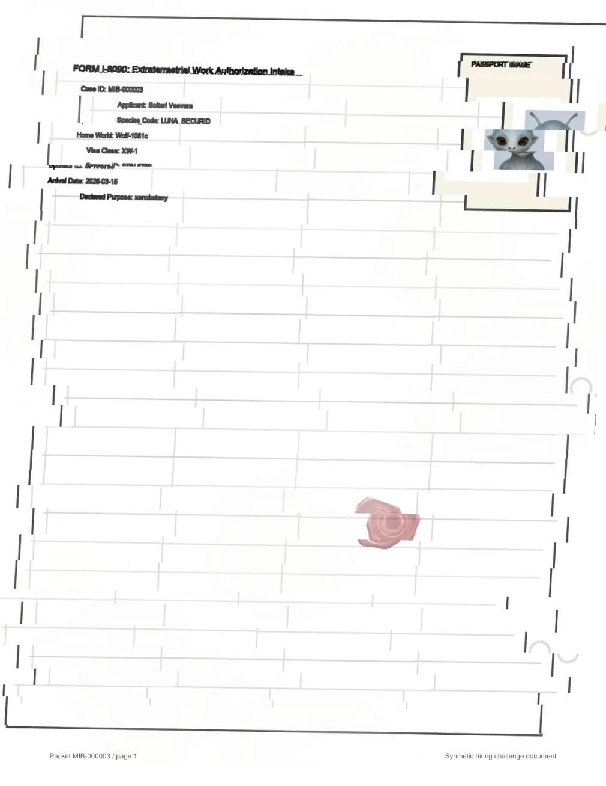
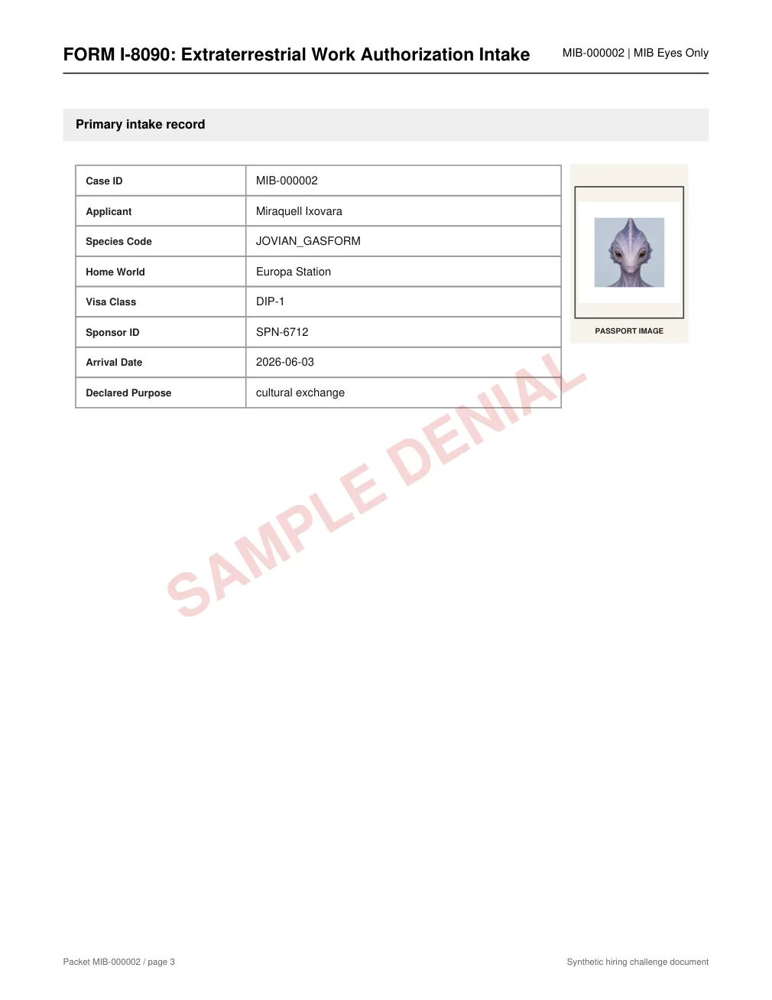
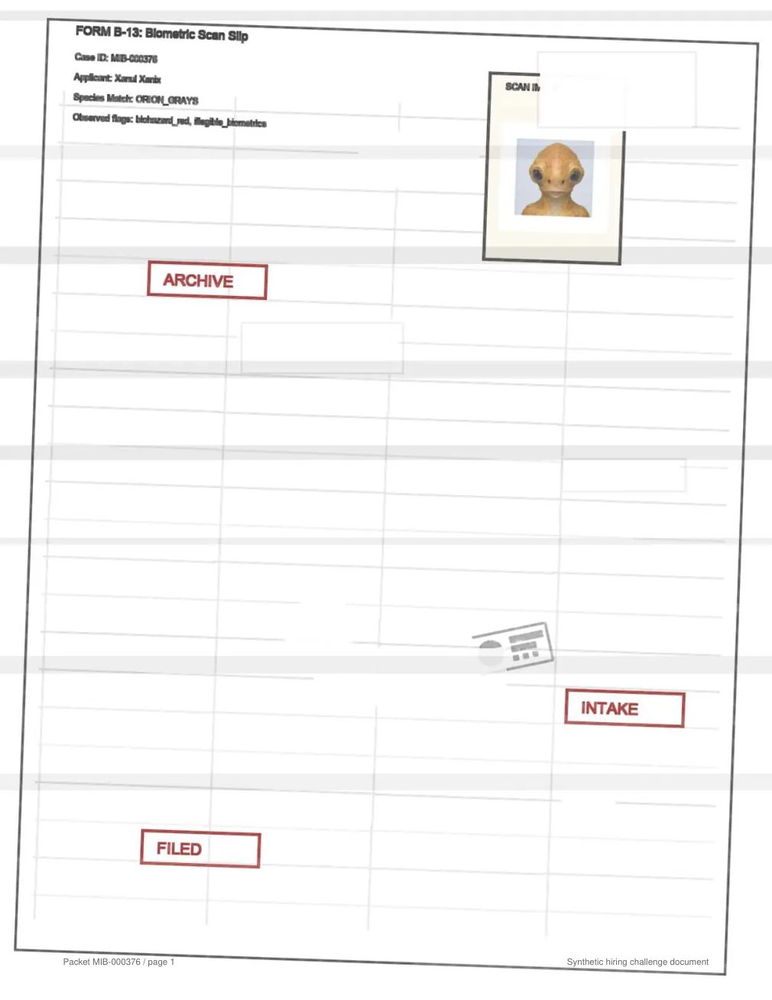

Project note 014 · August 2026
8090 MIB Doc Challenge
A document-processing competition in which participants built an offline system for reading messy PDF packets and deciding whether each case should be approved, denied, or reviewed.
8090 used the public challenge as part of its hiring process: the work itself was the application.



- Challenge window
- 20 July–3 August 2026
- Training set
- 1,000 labelled PDFs
- Validation set
- 5,000 unlabelled PDFs
- Runtime
- Offline, CPU only
- Time budget
- 6 seconds per PDF
- Output
- Record + decision + confidence
01 / The competition
What the challenge was
8090 released a complete document-engineering problem in public and invited candidates to submit working solutions.
The setting was fictional: the Men in Black immigration desk needed a replacement intake system. Each case arrived as a packet of forms, receipts, sponsor letters, biometric slips, registry portraits, inspection stamps, and manual notes.
The engineering constraints were not fictional. A submission had to run inside Docker without a network connection, on CPU, under a fixed memory limit. It had to extract ten fields and classify every packet as APPROVED, DENIED, or NEEDS_REVIEW.
Clean PDFs were only the starting point. The data included scans, rotations, occlusion, conflicting amendments, missing pages, and white-on-white answer-key injections. Scoring rewarded extraction, classification, and calibrated confidence. Unsafe approvals carried the largest penalty.
02 / The approach
How I approached it
The solution treated every extracted value as a claim that had to point back to visible evidence in the packet.
It starts with native PDF text and rendered pixels, rejects hidden or off-page instructions, then applies OCR only where the visible evidence is weak. Each candidate value keeps its page, geometry, source, confidence, and visibility status.
Deterministic rules resolve the final decision. If decisive evidence is missing or contradictory, the case is sent to review rather than completed by inference.
- 01ReadNative text and rendered pages
- 02Check visibilityExclude hidden and off-page text
- 03RecoverRun selective OCR on weak regions
- 04Keep provenancePage, geometry, source, confidence
- 05Apply rulesApprove, deny, or request review
03 / Examples
Three packets, step by step
These are recorded outputs from the solution. Change the case or page, then select an annotation to see why the evidence was accepted, ignored, or left unresolved.
04 / Result
Where the project ended
The final version processed every validation packet, averaged 1.202 seconds per PDF, and produced no unsafe approvals on the labelled training evaluation.
- Training score
- 117.36 / 150
- Leading score
- 130.00 / 150
- Difference
- 12.64 points
A small but important qualification: 117.36 is the locally reproduced score on the labelled training set. The 130 figure is the leading competition score, so this gives context rather than a like-for-like leaderboard position.
0unsafe approvals across 1,000 labelled cases
1.202saverage runtime per PDF
5,000 / 5,000validation records produced
05 / References
Code, brief, and attribution
The displayed packets are synthetic and MIT-licensed. They contain no real applicant data.